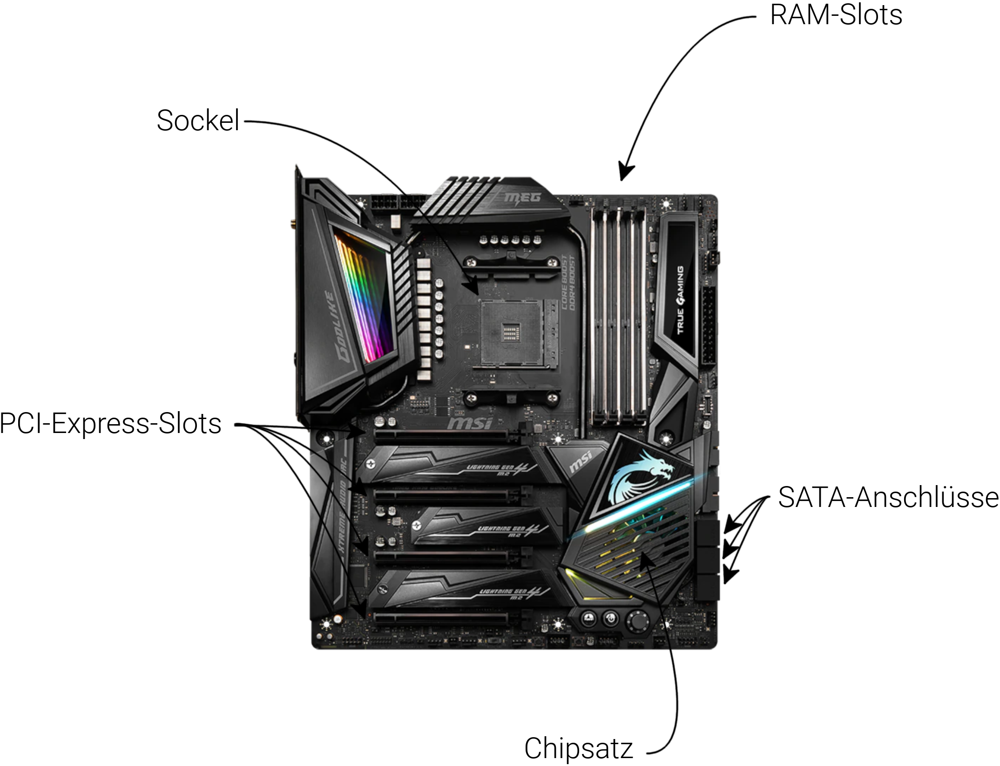
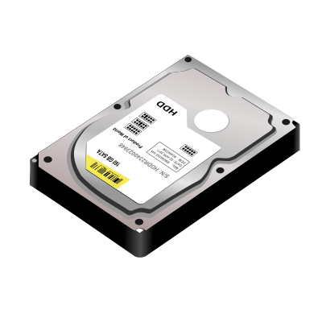
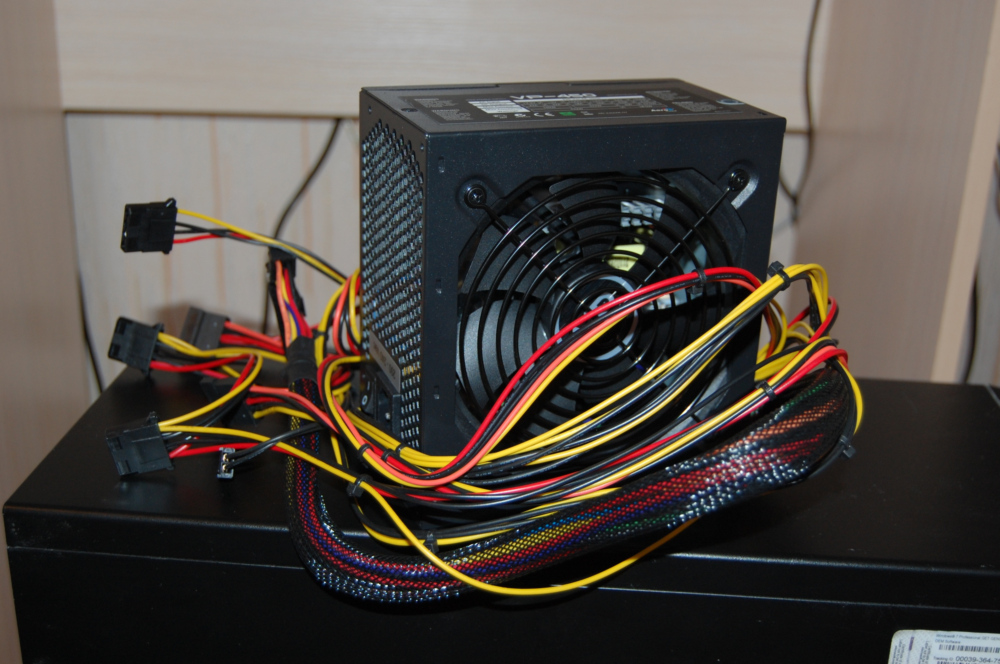
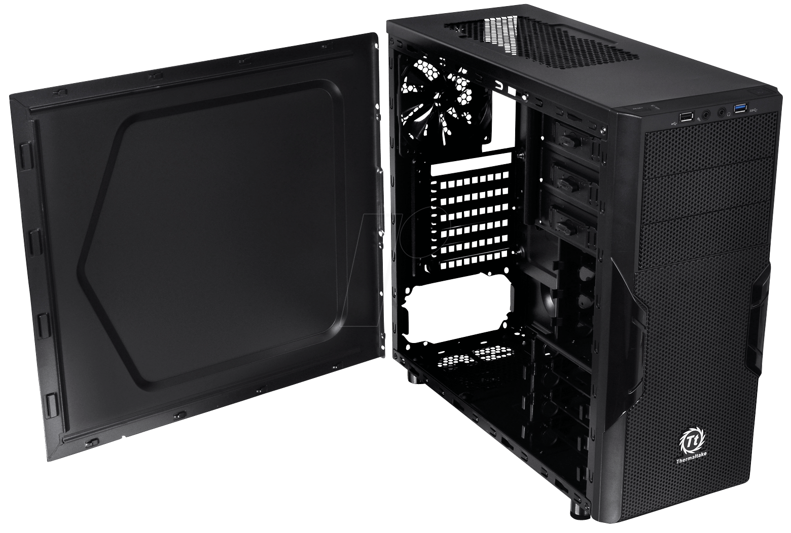

Was für Komponenten hat ein PC?
CPU
Ein Computer hat mehrere sehr wichtige Komponenten. Fangen wir mit der CPU an.
Die CPU oder auch die Central Processing Unit ist der Kern jedes Computers.
Sie ist die Hauptrecheneinheit und ohne diese funktionert absolut gar nichts.
Sie führt die meisten Brechnungen aus.
Ein Beispiel einer AMD-CPU sieht man links(Ryzen 9 5950X). Der Prozessor ist ein ausschlaggebender
Faktor für die Schnelligkeit eines Computers. Jeder Kern einer CPU beinhaltet Register,
also kleine Speicher, eine ALU(Arithmetic Logic Unit), welche arithmetische Berechnungen ermöglicht, sowie
ein Steuerwerk, welches derzeitige Operationen speichert und zum Beispiel den Prozessortakt bestimmt.
Mainboard/Motherboard

Das Mainboard oder auch Motherboard genannt wird dazu verwendet, um alle Komponenten
miteinander zu verbinden. Dafür bietet jedes Mainboard viele Anschlüsse, davon ist der
Sockel für die CPU und die Steckplätze für den Arbeitsspeicher, sowie die PCI-E-Slots für
Grafikkarten oder andere dedizierte Geräte und die SATA-Anschlüsse für Festplatten.
Der Chipsatz kontrolliert den Datenfluss zwischen den Teilen und muss auch bei höheren
Übertragungsraten gekühlt werden.
Arbeitsspeicher (RAM)
Der RAM (Random-Access-Memory) ist ein Zwischenspeicher für derzeit ausgeführte Programme.
Es speichert sie temporär, damit die gerade ausgeführten Programme schnell reagieren können.
Dieser Speicher ist flüchtig. Das heißt, dass er beim Ausschalten des PC oder bei der Freigabe
des Speichers durch das Programm diese Daten verliert. Arbeitsspeicher ist extremst schnell (mit übertaktetem DDR4-RAM bis zu 26 GB/s), was
ihn auch so wichtig für die Schnelligkeit der Programme macht.
Grafikkarte (GPU)
Die Grafikkarte erhält Anweisungen von dem Prozessor. Aus diesen Anweisungen erstellt die
Grafikkarte ein Bild (auch Frame genannt) und speichert dieses in einem Buffer. Der alte Frame
wird mit einem neueren ersetzt und es wird etwas neues auf dem Bildschirm ausgegeben.
Grafikkarten sind dafür ausgelegt Vektor- und Matrizeberechnungen auf vielen Kernen auszuführen.
CPUs können nur eine Anweisung nach der anderen ausführen, doch Grafikkarten können tausende solcher gleichzeitig
ausführen, haben aber leider nicht die gleiche arithmetische Vielfalt. Grafikkarten heutzutage haben einen PCI-E Anschluss.
Speicher

Der Speicher eines Computers darf nicht irrtümlicherweise mit dem Arbeitsspeicher vertauscht werden, da der
normale Speicher eines Computers nicht flüchtig, deutlich größer und langsamer ist. Es gibt verschiedene Varianten
von Speicher: SSDs und HDDs. Bei den Hard Disk Drives werden die Bits auf einer Magnetscheibe durch Polarisierung gespeichert.
Bei Solid-State-Drives werden die Bits als Elektronegativität in Flash-Speicher gespeichert. Diese SSDs sind deutlich schneller als auch leiser und stromsparender
als die HDDs. SSDs waren in den 90ern unbezahlbar, weshalb sie erst seit 10 Jahren sich and Beliebtheit erfreuen.
Netzteil

Das Netzteil eines Computers verteilt den Strom mit den richtigen Spannungen an die richtigen Stellen.
Jedes Netzeil hat mindestens einen Haupt-Mainboard-Stecker mit 24 Pins, einen CPU-Stecker mit maximal 8 Pins, einen
SATA-Power-Stecker, einen PCI-E-Power-Stecker und einen Molex-Stecker. Dadurch können die richtigen Spannungen an die
richtigen Orte gelangen. Man muss vor dem Kauf eines Netzteils sicher sein, ob es genug Strom liefern kann, was man an der
Wattzahl erkennen kann.
Gehäuse

Das Gehäuse ist nicht essentiell für einen Computer, jedoch ermöglicht eine Gehäuse Schutz und bessere Kühlung durch
Gehäuselüfter, welche die Luft im Gehäuse zirkulieren und diesen an den Kühlblöcken mit den Lüfter der CPU und GPU sowie
dem Chipsatz heranführen. Gehäuse sind schlichter geworden und haben nicht so wie früher viele Farbvariationen oder alte
Steckplätze. Die meisten Gehäuse haben ein IO-Panel, wo man USB-Anschlüsse und Audio-IO finden kann.
Das Gehäuse lässt den Besitzer eine Kreativität ausleben. Es gibt sehr viele dekorative Mittel, um den Computer zu verzieren.
Von RBG-Lüfter bis LED-Stripes gibt es alles, was das Computerenthusiastenherz begehrt.
Supercomputer
Ein Supercomputer ist ein sehr schneller Computer, welcher meist aus sehr vielen einzelnen Computern besteht.
Sie werden für Simulationen, wie zum Beispiel Kernspaltung benutzt. Diese Geräte erfordern ein hohes Maß
an Wartung und Sicherheit, um Abstürze und Brände zu verhindern.
Lewin Ritzmann
©
Der 07.01.2022, Fulda